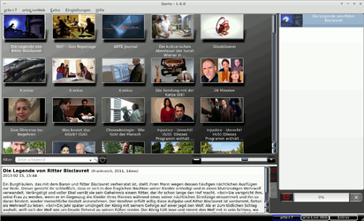
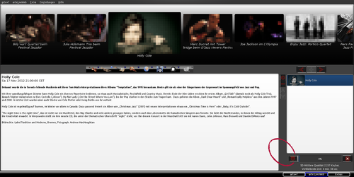
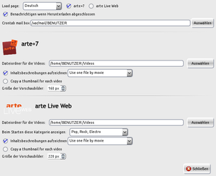
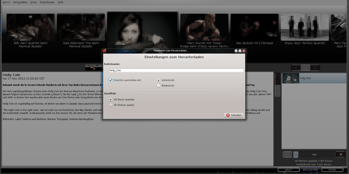
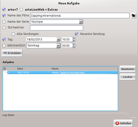

Qarte
Dieser Artikel wurde für die folgenden Ubuntu-Versionen getestet:
Ubuntu 14.04 Trusty Tahr
Zum Verständnis dieses Artikels sind folgende Seiten hilfreich:
Qarte ist ein Programm, mit dessen Hilfe sich die vom deutsch-französischen Fernsehsender "arte" ausgestrahlten Inhalte von arte+7 und arteLiveWeb (Konzerte) komfortabel und legal für den privaten Gebrauch lokal speichern lassen. Einige Sendungen stehen bei arte+7 sieben Tage nach der Ausstrahlung zur Verfügung. Zumeist gibt es auch eine Kurzbeschreibung der einzelnen Inhalte, die ebenfalls beim Download dabei sein können.
Die funktionellen Bestandteile sind mit Python und die Oberfläche ist mit Qt programmiert. Als Lizenz wurde die GNU GPL 3.0 gewählt.
Installation¶
Die Anwendung ist nicht in den offiziellen Paketquellen enthalten und kann daher nur über ein "Personal Package Archiv" (PPA) [1] des Entwicklers installiert werden.
PPA¶
Adresszeile zum Hinzufügen des PPAs:
ppa:vincent-vandevyvre/vvv
Hinweis!
Zusätzliche Fremdquellen können das System gefährden.
Ein PPA unterstützt nicht zwangsläufig alle Ubuntu-Versionen. Weitere Informationen sind der  PPA-Beschreibung des Eigentümers/Teams vincent-vandevyvre zu entnehmen.
PPA-Beschreibung des Eigentümers/Teams vincent-vandevyvre zu entnehmen.
Damit Pakete aus dem PPA genutzt werden können, müssen die Paketquellen neu eingelesen werden.
Nach dem Aktualisieren der Paketquellen kann folgendes Paket installiert [2] werden:
qarte (ppa)
 mit apturl
mit apturl
Paketliste zum Kopieren:
sudo apt-get install qarte
sudo aptitude install qarte
Experten-Info:
In diesem PPA ist auch die Bildverwaltung Oqapy enthalten.
Bedienung¶
|  |
| Abb. 1: Hauptseite (hier arte+7) |
|  |
| Abb. 2: arteLiveWeb mit Markierung beim Downloadschalter |
In der Übersicht stehen drei Auswahlmöglichkeiten zur Verfügung. Sie betreffen die 1. Kategorie: arte+7, arteLiveWeb oder Extras. Die Schalter zur Auswahl sind unten rechts. Sollten beim Wechsel der Rubrik keine Bilder erscheinen, so muss der Inhalt neu eingelesen (geparst) werden. Im Menü muss hierzu die passende Rubrik gewählt und "Verbinden" geklickt werden.
Konfiguration¶
Beim ersten Programmstart erscheint das Haupt-Konfigurationsmenü (siehe Abbildung 3), Die vorgeschlagene Standardkonfiguration lässt sich auch später noch ändern. Sie ist über "Menü -> Einstellungen -> Einstellungen" erreichbar. Die Sprachwahl im Auswahlfeld "Loadpage" (Startseite) bestimmt die Sprache des Downloads. Für arte+7 und arteLiveWeb können verschiedene Download-Ordner angegeben/erstellt werden. Für arteLiveWeb stehen optional verschiedene Musikrichtungen zur Auswahl, die dann beim Start angezeigt werden.
Inhaltsbeschreibungen als zusätzliche Dateien können beim Download als eine Einzel- oder Mehrfachdatei ausgewählt werden. Zu finden sind sie im bestimmten Ordner als index oder FILMDATEINAME.txt. Für arteLiveWeb erhält man außerdem die Möglichkeit, zwischen HD und "normaler SD-Auflösung" der Filmdatei zu wählen (Bild 2+4). Ebenso kann festgelegt werden, ob ein einzelnes Vorschaubild zur Datei mit heruntergeladen werden soll.
Download von Sendungen¶
Ein Doppelklick links  auf ein Vorschaubild im Vorschaufenster markiert die Datei als Download und kopiert sie unmittelbar nach rechts in die Download-Tabelle. Klickt man einmal mit auf die ausgewählte Datei in der Download-Tabelle, werden drei rote Symbole in der unteren Hälfte sichtbar. Das "Zahnradsymbol", ein "Minuszeichen" sowie "Pfeil nach unten/oben".
auf ein Vorschaubild im Vorschaufenster markiert die Datei als Download und kopiert sie unmittelbar nach rechts in die Download-Tabelle. Klickt man einmal mit auf die ausgewählte Datei in der Download-Tabelle, werden drei rote Symbole in der unteren Hälfte sichtbar. Das "Zahnradsymbol", ein "Minuszeichen" sowie "Pfeil nach unten/oben".
"Zahnrad" - ermöglicht die Umbenennung der Datei, optional kann der komplette Dateiname ersetzt werden (Replace) und das Leerzeichen mit Underscore (Unterstrich), oder Bindestrich (Hyphen) bei Doppelnamen versehen werden. Beispiel:
Arte Journal (Normal bzw. Leerzeichen)
Arte_Journal (Unterscore)
Arte-Journal (Hyphen)
"Minuszeichen" - entfernt den Download aus der der Download-Tabelle.
" Pfeil oben/unten" - zur Umsortierung beim Herunterladen mehrerer Dateien.
Der "Pfeil nach unten", neben der Fortschrittsanzeige, startet den Download ohne weitere Optionen (siehe Bild 1 + 2, Ellipse offen).
|  |
| Abb. 3: Menü -> Einstellungen -> Einstellungen |
|  |
| Abb. 4: Download-Menü (Zahnrad) -> Qualität HD/SD wählen / Namen anpassen |
|  |
| Abb. 5: zeitgesteuertes Herunterladen einrichten |
Zeitgesteuertes Herunterladen¶
Qarte erlaubt auch ein zeitgesteuertes Herunterladen (cronjob). Diese Option erreicht man durch einen Klick mit der rechten Maustaste  auf ein Vorschaubild, oder auch über die Menüauswahl
auf ein Vorschaubild, oder auch über die Menüauswahl
"Einstellungen -> zeitgesteuertes Herunterladen"
Die Einstellungen sind selbsterklärend und beinhalten u.a. Startzeitpunkt, Benennung sowie Datum der ausgewählten Datei. Das Herunterladen erfolgt im Hintergrund, auch wenn das Programm geschlossen wurde.
Dateiformat Download¶
Die heruntergeladene Sendung trägt die Dateiendung .flv (Flash-Video) und enthält als Videocodec H264 (Main) mit yuv420p und 720x406 sowie als Audiocodec AAC, 48000 Hz, stereo, s16 (default). 60 Min. Wiedergabedauer entsprechen ca. 400 MB Datenvolumen in SD-Standardqualität.
Gliederung von Qarte¶
Arte+7¶
Ausgesuchte Sendungen und Spielfilme sind sieben Tage lang in der Rubrik enthalten.
Hinweis:
Vereinzelte Sendungen sind erst nach 23 Uhr abrufbar, da sie unter den Jugendschutz fallen.
ArteLiveWeb und Extras¶
Die verschiedensten musikalischen/künstlerischen Stilrichtungen sind hier vertreten, gekennzeichnet durch Symbole. HD und SD steht als Download zur Verfügung
ArteLiveWeb¶
Klassische Musik
Jazz und Blues
Pop, Rock, Elecktro
Theater und Tanz
Welt Musik
Tracks
Blogotheque
Neuheiten
Problembehebung¶
Speicherzugriffsfehler - segmentation fault¶
Sollte Qarte die Ausführung einfach abbrechen und vom Bildschirm verschwinden, kann der Fehler unter Umständen am Desktop-Thema liegen. Beispiel Xfce 4.10: Mit dem Thema Greybird-Improved bricht Qarte die Ausführung ab, mit Greybird läuft Qarte ohne Probleme. Mit dem Programm qtconfig-qt4 kann der GUI-Style auf "Cleanlooks" geändert werden, so dass der Speicherzugriffsfehler nicht mehr auftritt.
Benachrichtigung¶
Die E-Mail-Benachrichtigung nach Beenden des Herunterladens funktioniert erst nach Einrichtung von Postfix als lokalem Mailserver.
Containerformatwechsel - FLV nach MKV¶
Möchte man eine FLV-Datei in das Containerformat MKV (Matroska) umwandeln, nimmt MKVToolNix (Versionen älter als 6.0.0) die Datei nicht an. Dann empfiehlt es sich, die heruntergeladene Datei vorher zu konvertieren [4]:
Mit avconv:
avconv -i "Sendung.flv" -vcodec copy -acodec copy "Sendung.mkv"
Mit FFmpeg:
ffmpeg -i "Sendung.flv" -vcodec copy -acodec copy "Sendung.mkv"
Es wird nur das Containerformat gewechselt, Video- und Audio-Codecs bleiben unangetastet.
 Forendiskussion mit dem Entwickler des Programms
Forendiskussion mit dem Entwickler des Programms  - mit Liste der Änderungen
- mit Liste der Änderungen
 Übersichtsartikel
Übersichtsartikel- Erstellt mit Inyoka
-
 2004 – 2017 ubuntuusers.de • Einige Rechte vorbehalten
2004 – 2017 ubuntuusers.de • Einige Rechte vorbehalten
Lizenz • Kontakt • Datenschutz • Impressum • Serverstatus -
Serverhousing gespendet von